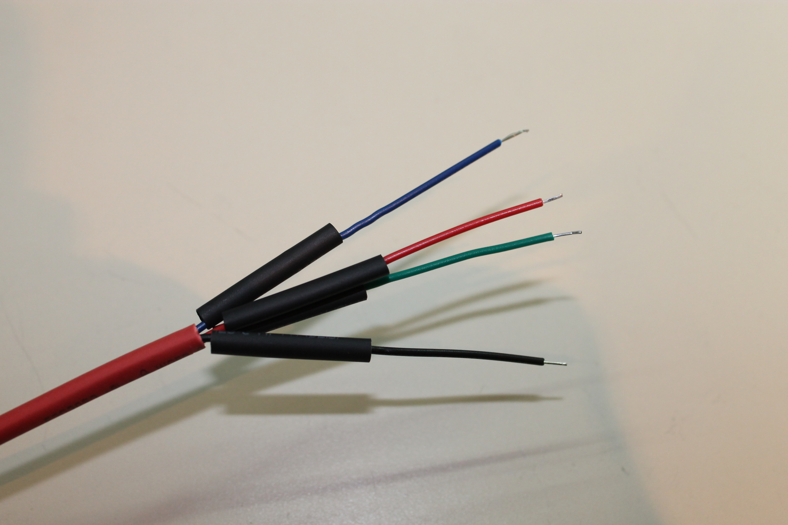
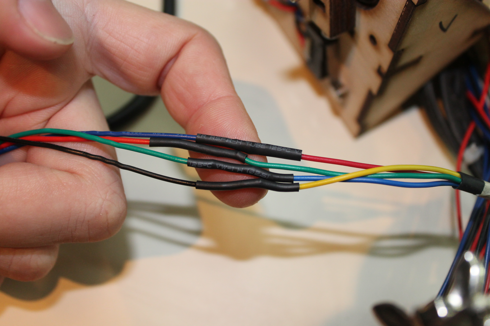
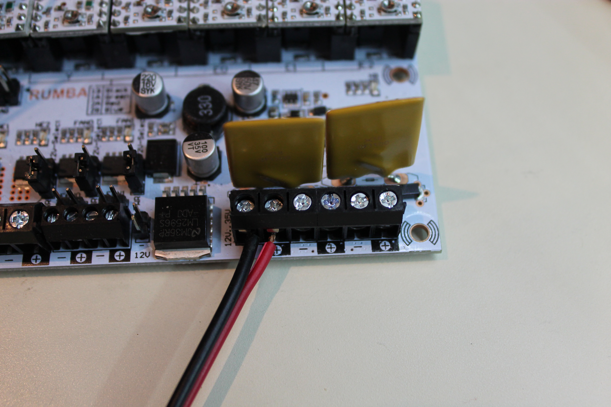

The wires order from left to right should be red, green, blue, yellow. In this picture I have not connected motors 1 and 2.

If you are using the motor extension cables provided with the kit then the word "MOTOR" on the connector should face the Polulu chip.
Don't forget to put the heat shrink on first!

Helping hands can make this work much easier.
If you are using the motor extension cables provided with the kit then solder the extension blue, red, green, and black to the stepper motor red, green, blue, and yellow, respectively.
Connect the 5.1x2.2 female power supply to the RUMBA screw terminals labelled MAIN-PWR
Connect the 12v2a power supply to the RUMBA.
Install test_steppers_rumba.ino. Motors will begin to move as soon as sketch uploads.
Open the serial window to see what the code is doing.
When the test works, disconnect the stepper from the RUMBA.
Close the serial window, disconnect 12v power, and disconnect USB.
put a piece of tape on each stepper and at the far end of the wire.
write the stepper number on the appropriate tape.
install the steppers in a clockwise order.
Steppers 1 and 2 should be side-by-side.
Stepper 1 should be above switch 1.
Stepper 2 should be above switch 2.
Repeat for steppers 3-6.
put the wires through the hole in the center of the frame.
attach the steppers in order with M3x5 screws.
The tape will make it easy to keep them organized.
Make sure 12v power is not connected.
put a small piece of tape on each motor shaft so you can easily see it move.
connect the 12v2a power supply to the RUMBA.
install firmware_rumba_minimal.ino
open the serial window and set the baud rate to 57600.
G00 X100; should turn stepper 1.
G00 Y100; should turn stepper 2 *in the opposite direction*.
G00 Z100; should turn stepper 3 same direction as #1.
G00 U100; should turn stepper 4 same direction as #2.
G00 V100; should turn stepper 5 same direction as #1.
G00 W100; should turn stepper 6 same direction as #2.
G28; will spin every motor until the matching limit switch is hit. Test all six.